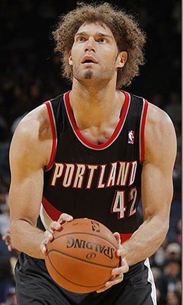

|  | Матчи | 59 | Передачи (всего/среднее) | 56 | 0.9 | |
| В основе | 59 | Подборы в защите (всего/среднее) | 204 | 3.5 | ||
| Время (всего/среднее) | 1637:54 | 27:46 | Подборы в атаке (всего/среднее) | 190 | 3.2 | |
| Очки (всего/среднее) | 566 | 9.6 | Подборы (всего/среднее) | 394 | 6.7 | |
| 2-очковые броски (всего/среднее) | 234/436 | 4/7.4 | Перехваты (всего/среднее) | 16 | 0.3 | |
| 2-очковые броски (% реализации) | 53.7% | Потери (всего/среднее) | 73 | 1.2 | ||
| 3-очковые броски (всего/среднее) | 0/1 | 0/1 | Блокшоты (всего/среднее) | 84 | 1.4 | |
| 3-очковые броски (% реализации) | 0% | Блокшоты соперника (всего/среднее) | 31 | 0.5 | ||
| Штрафные броски (всего/среднее) | 98/127 | 1.7/2.2 | Фолы (всего/среднее) | 122 | 2.1 | |
| Робин Лопес | Штрафные броски (% реализации) | 77.2% | Коэффициент полезности (всего/среднее) | 658 | 11.2 |